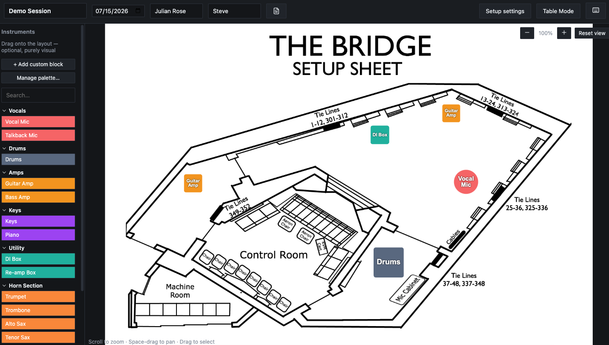
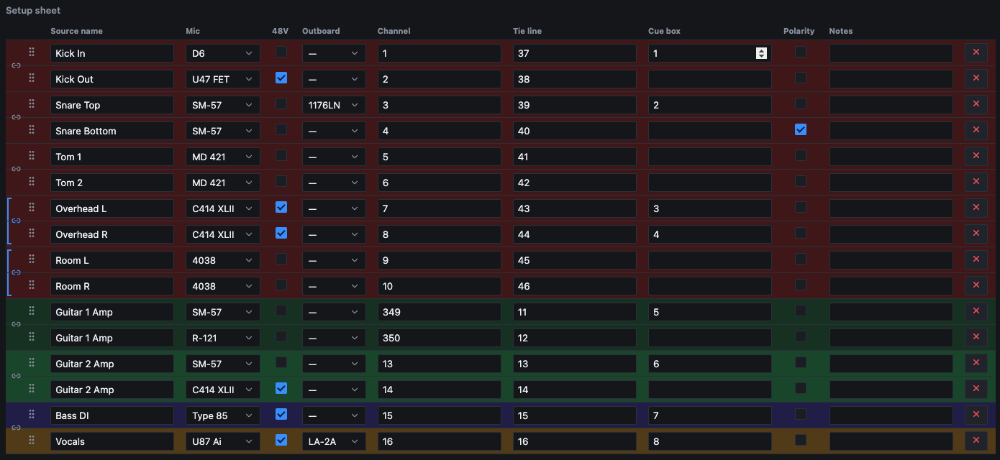
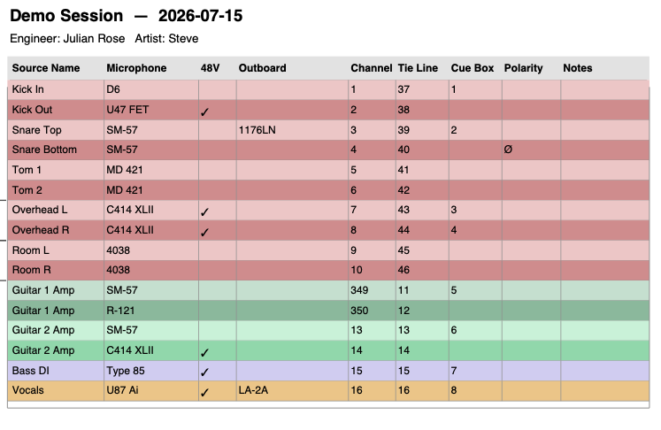
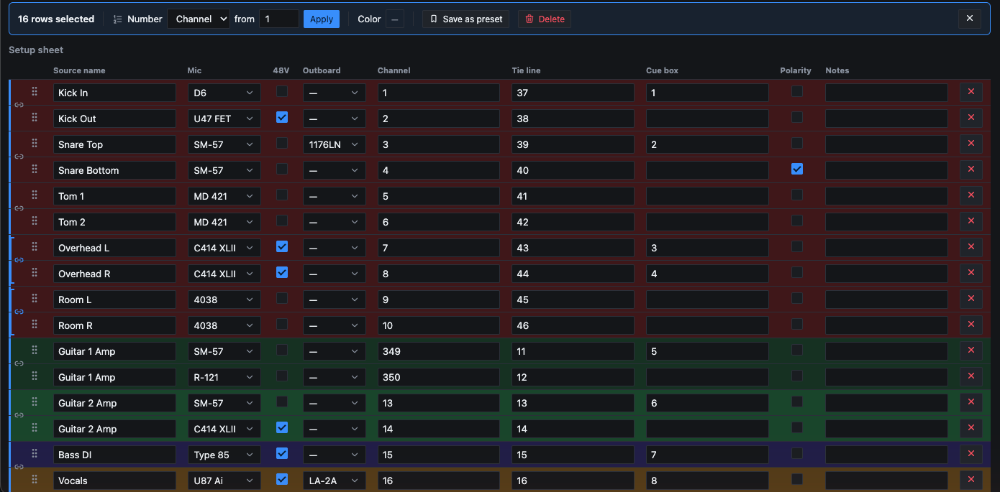

Full setup sheet editor
Mic, 48V, outboard, channel, tie line, cue box, polarity, and notes — one row per source, all in one table.
Free & open for macOS
Plan mic assignments, channel routing, and room layouts before the session starts — then hand the engineer a clean PDF instead of a scribbled notepad.

Mic, 48V, outboard, channel, tie line, cue box, polarity, and notes — one row per source, all in one table.
Link two rows and their mic, outboard, 48V, and channel settings stay in sync automatically.
Drag and drop instruments onto a real building floor plan — see the room, not just a spreadsheet.
Save a full channel configuration once, reuse it across every future session with that setup.
Grid lines, zebra striping, header shading, and accent color — print sheets that look like yours.
Multi-select rows, apply sequential numbering, and color-code sections in a couple of clicks.
Track mics, outboard, and preamps per studio — plus a shared faculty-reserve pool for shared gear.
Customizable keybinds, dark/light theme, and automatic updates — a desktop app that stays out of your way.

The spreadsheet view every engineer already knows how to read — but with linked stereo pairs, per-row colors, and inline gear pickers pulled straight from your studio's catalog.

Export a clean, printable sheet with the session date, engineer, and artist up top — styled to match how your studio actually does paperwork.

Select a whole section of the sheet and apply sequential channel or tie-line numbers, or a color, in one action instead of row by row.